Está hecha de canciones (los planetas) y de perfiles vecinos (las estrellas que te rodean). Así es como los Sistemas de Recomendación Musical construyen espacios latentes donde lo más cercano a ti es la recomendación que llega a tus oídos.
Estos espacios se entrenan con cada interacción tuya con el sistema. El algoritmo aprende mediante tus inputs, ya sea un like, un skip o cuánto tiempo escuchaste la canción, para ir moviendo tu perfil dentro de este espacio.
¿Quieres entrenar tu galaxia para ver hasta dónde se puede mover tu estrella de perfil?
Bienvenido a tu galaxia musical. Este espacio muestra cómo tu algoritmo de recomendación musical construye tus recomendaciones. Tu perfil es la estrella que está al medio, y las estrellas a tu alrededor son tus perfiles vecinos. Los planetas son tus canciones más escuchadas últimamente.